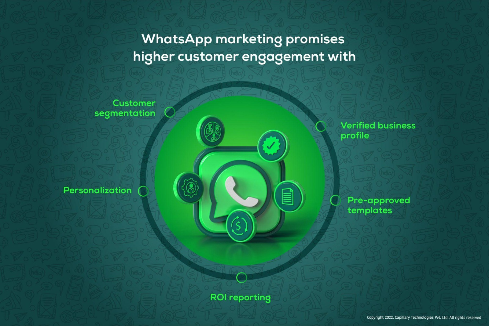

WhatsApp Marketing for Business: The Complete Guide for Small Businesses in Tamil Nadu (2026)

WhatsApp has become the first place customers go to ask a business a question.
Quick Answer: WhatsApp marketing for business is one of the easiest and most effective ways to connect with customers, generate enquiries, promote products, and increase sales. Whether you own a shop, clinic, restaurant, boutique, or home-based business in Pondicherry, Cuddalore, Villupuram, Dindivanam, or anywhere in Tamil Nadu, WhatsApp helps you communicate directly with customers in a fast and personal way.
Why WhatsApp Marketing is Essential for Businesses in 2026
Think about it. How many times do you open WhatsApp every day? Probably more than any other app. Now imagine your customers — they also use WhatsApp to:
- Chat with friends
- Contact businesses
- Ask for prices
- Book appointments
- Order products
- Receive updates
That's why WhatsApp marketing for business has become one of the most powerful digital marketing tools for local businesses. Instead of waiting for customers to visit your shop, you can reach them directly with valuable updates and offers.
What is WhatsApp Marketing?
WhatsApp marketing means using WhatsApp to communicate with customers professionally. Businesses can use it to:
- Answer enquiries
- Share product catalogues
- Send offers
- Confirm bookings
- Provide customer support
- Send invoices
- Collect feedback
- Build long-term customer relationships
Unlike traditional SMS, WhatsApp allows businesses to send images, videos, PDFs, locations, voice notes, and interactive messages.
🚀 Get Your Free ConsultationWhy Small Businesses Should Use WhatsApp Marketing
Customers today expect fast responses. If someone enquires about your product and receives a reply within minutes, they are much more likely to become a customer. WhatsApp provides:
- Faster communication
- Personal conversations
- Better customer experience
- Higher engagement
- Repeat business opportunities
For local businesses, it creates trust because customers feel they are speaking directly with the business.
Businesses That Benefit Most from WhatsApp Marketing

Almost every business can use WhatsApp effectively. Examples include:
- Restaurants, Cafés, Hotels
- Dental Clinics, Hospitals
- Beauty Salons, Boutiques, Jewellery Stores
- Home Bakers, Tailoring Services
- Coaching Centres, Schools
- Builders, Interior Designers, Real Estate Agencies
- Travel Agencies, Water Purifier Dealers, Fitness Centres
- Digital Marketing Agencies, Women Entrepreneurs
Whether you're selling products or services, WhatsApp helps you stay connected with customers.
Why WhatsApp Marketing Works So Well in Tamil Nadu
In cities like Pondicherry, Cuddalore, Villupuram, Dindivanam, and across Tamil Nadu, WhatsApp is one of the most widely used communication apps. Customers often prefer sending a message instead of making a phone call.
Examples: a customer asks for today's menu from a restaurant, a parent enquires about coaching classes, a boutique customer requests the latest catalogue, a patient books a doctor's appointment. WhatsApp makes these conversations simple, quick, and convenient.
💬 Chat With Us on WhatsAppBenefits of WhatsApp Marketing for Business
Instant Customer Communication
Customers receive replies quickly, helping businesses respond faster than email. Fast responses often improve customer satisfaction.
Better Customer Relationships
Personal conversations create stronger trust. Customers appreciate businesses that communicate clearly and respond promptly.
Higher Engagement
Compared to many other communication channels, WhatsApp messages are often viewed soon after they are received. This makes it useful for important updates and customer communication.
Product Catalogue Sharing

Businesses can showcase products, prices, images, and descriptions. Customers can browse directly within WhatsApp without asking for every detail individually.
Easy Appointment Booking
Ideal for clinics, salons, fitness centres, consultants, and coaching institutes. Customers can book appointments quickly through chat.
Customer Support
WhatsApp helps businesses provide order updates, delivery tracking, technical support, service reminders, and complaint resolution. Better support encourages repeat customers.
Broadcast Messages
Businesses can share updates such as festival offers, new arrivals, seasonal discounts, business announcements, and event invitations. Broadcast lists let you send individual messages to multiple saved contacts without creating a group. Always ensure customers have agreed to receive your updates and follow WhatsApp's policies.
WhatsApp Business Features Every Business Should Use

Business Profile
Include Business Name, Address, Website, Working Hours, Email, and Description. A complete profile increases credibility.
Product Catalogue
Display Product Images, Pricing, Descriptions, and Categories. Customers can browse products anytime.
Quick Replies
Save frequently used responses — pricing, business hours, delivery information, appointment availability. This saves time and improves response speed.
Labels
Organize customers by New Enquiries, Pending Payments, Repeat Customers, and Completed Orders. Labels help businesses manage conversations efficiently.
Automated Greeting Messages
Welcome customers automatically when they contact your business for the first time. A friendly greeting creates a positive first impression.
Away Messages
Inform customers when you're unavailable. This sets expectations and improves customer experience.
WhatsApp Marketing vs SMS Marketing
| WhatsApp Marketing | SMS Marketing |
|---|---|
| Images, videos & PDFs | Text only |
| Product catalogues | No catalogue support |
| Interactive conversations | One-way communication |
| Business profile | Limited business identity |
| Supports documents & locations | Limited features |
| Better customer engagement | Basic messaging |
| Suitable for customer support | Mainly notifications |
For many local businesses, WhatsApp provides a richer and more interactive communication experience.
🚀 Set Up WhatsApp Business TodayBest Practices for WhatsApp Marketing
Always Get Customer Permission
Only message customers who have chosen to receive updates. Respecting customer preferences builds stronger relationships.
Share Useful Content
Avoid sending only promotional messages. Also share helpful tips, product updates, educational content, customer success stories, and festival wishes. Value-driven communication keeps customers engaged.
Keep Messages Short
Most customers prefer clear, concise messages. Avoid sending very long paragraphs.
Use High-Quality Images
Professional photos increase customer confidence. Well-presented products often receive more enquiries.
Respond Quickly
Fast replies create a positive customer experience and improve conversion opportunities.
Common WhatsApp Marketing Mistakes
Many businesses lose customer trust because they:
- Send too many promotional messages
- Ignore customer questions
- Use unprofessional language
- Share low-quality images
- Delay responses
- Fail to organize customer enquiries
- Send messages without permission
- Forget to update product catalogues
Good WhatsApp marketing is about building relationships — not overwhelming customers.
Real Example: A Home Bakery in Pondicherry

Imagine a home baker in Pondicherry. Earlier, customers only came through referrals, orders were managed manually, and many enquiries were missed.
After using WhatsApp Business: product catalogue uploaded, greeting message configured, quick replies created, festival cake offers shared, repeat customers received updates.
The bakery experienced faster responses, more repeat orders, better customer relationships, and increased festive season enquiries. This shows how a simple WhatsApp strategy can improve day-to-day business operations.
Why Women Entrepreneurs Should Use WhatsApp Marketing

Many women entrepreneurs successfully run businesses from home. Examples include home bakeries, handmade jewellery, boutique stores, tailoring, beauty services, home catering, and gift businesses.
WhatsApp allows them to build personal relationships, share catalogues, receive orders, offer customer support, and grow without investing heavily in advertising. It's a practical tool for businesses of every size.
Why Choose BM TechX for WhatsApp Marketing?
At BM TechX, we help businesses use WhatsApp effectively as part of a complete digital marketing strategy. Our services include:
- WhatsApp Business Setup
- Business Profile Optimization
- Product Catalogue Creation
- Automated Greetings
- Quick Replies
- Customer Journey Planning
- WhatsApp Campaign Strategy
- Click-to-WhatsApp Ad Integration
- CRM & Lead Management Guidance
- Digital Marketing Consultation
We proudly support businesses across Pondicherry, Cuddalore, Villupuram, Dindivanam, and throughout Tamil Nadu, helping them improve customer communication and generate more enquiries.
As part of the ABM ecosystem, our learning partner BM Academy has successfully trained more than 1,400 learners and helped 150+ students secure real job placements. This practical digital marketing experience enables us to recommend strategies that work for real businesses.
Our focus is simple: Better Conversations → Better Customer Experience → More Enquiries → Business Growth
Frequently Asked Questions (FAQs)
1. What is WhatsApp marketing for business?
WhatsApp marketing is the use of WhatsApp Business to communicate with customers, share products, answer enquiries, provide support, and promote services in a professional way.
2. Is WhatsApp marketing suitable for small businesses?
Yes. It is especially useful for small businesses because it enables direct communication with customers and helps build trust without requiring a large marketing budget.
3. What is the difference between WhatsApp and WhatsApp Business?
WhatsApp Business includes additional features such as a business profile, product catalogue, quick replies, labels, greeting messages, and automated responses designed specifically for businesses.
4. Can WhatsApp help generate more enquiries?
Yes. Many businesses receive enquiries through product catalogues, click-to-WhatsApp ads, website buttons, QR codes, and customer referrals.
5. Is it okay to send promotional messages?
Yes, but only to customers who have agreed to receive updates. Sending relevant, useful messages at a reasonable frequency helps maintain trust and follows good marketing practices.
6. Which businesses benefit the most from WhatsApp marketing?
Restaurants, clinics, salons, boutiques, coaching centres, home businesses, real estate companies, consultants, and retail stores can all benefit from professional WhatsApp communication.
7. Can WhatsApp be connected to Facebook and Instagram Ads?
Yes. Businesses can run Click-to-WhatsApp ads that allow customers to start a conversation directly from Facebook or Instagram.
8. Do I need a website if I already use WhatsApp?
Yes. A website builds credibility, supports SEO, and provides detailed business information. WhatsApp works best when combined with a website and a Google Business Profile.
9. Can BM TechX help set up WhatsApp Business?
Yes. We assist with WhatsApp Business setup, profile optimization, catalogue creation, automation, and campaign strategy.
10. Does BM TechX provide WhatsApp marketing services across Tamil Nadu?
Yes. BM TechX supports businesses in Pondicherry, Cuddalore, Villupuram, Dindivanam, and across Tamil Nadu, helping them use WhatsApp to improve customer communication and business growth.
Final Thoughts
For small businesses, WhatsApp marketing for business is no longer just a messaging tool — it's a powerful customer engagement platform. From answering enquiries and sharing product catalogues to confirming appointments and building long-term relationships, WhatsApp helps businesses stay connected with customers in a simple and effective way.
When combined with a professional website, Google Business Profile optimization, SEO, and social media marketing, WhatsApp becomes a valuable part of your overall digital marketing strategy.
Whether you're a boutique owner in Villupuram, a restaurant in Pondicherry, a clinic in Cuddalore, or a home-based entrepreneur anywhere in Tamil Nadu, using WhatsApp professionally can help your business grow faster and serve customers better.
🚀 Get Your FREE GMB & Website Audit
Want to improve your online presence and generate more customer enquiries? Our team will review your Google Business Profile and website, identify opportunities for growth, and prepare a customized proposal for your business.
- ✅ FREE Google Business Profile Audit
- ✅ FREE Website Audit
- ✅ Customized Digital Marketing Proposal
📲 WhatsApp: 99445 09441